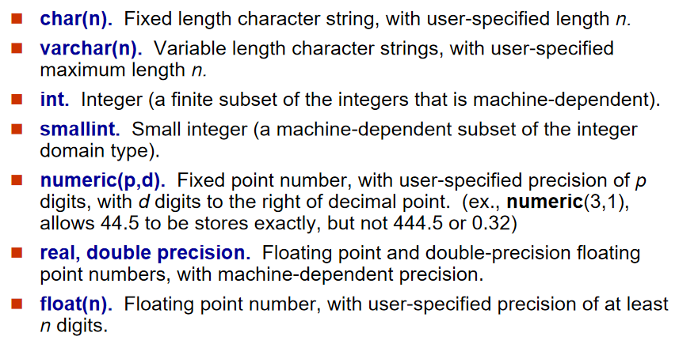

SQL 查询语言概览
SQL：结构化查询语言（Structured Query Language），是用于管理关系型数据库并对其中的数据进行一系列操作（包括数据插入、查询、修改、删除等）的一种语言。
- SQL 语言不区分大小写（关键字如 SELECT、FROM 可小写），但数据库表名、列名的大小写敏感性依赖于数据库和操作系统（如 Linux 下的 MySQL 区分表名大小写，Windows 下不区分）。
- SQL 是关系型数据库的 "通用语言"，所有主流关系型数据库（MySQL、Oracle、SQL Server 等）都支持 SQL，只是存在少量语法差异（称为 "方言"），核心功能完全一致。
SQL 语言的组成部分
- 数据定义语言（DDL）：用于定义和修改数据库结构，提供创建、修改、删除关系模式、索引、视图的命令。
- 数据操纵语言（DML）：用于查询和更新数据，提供从数据库中查询数据，以及插入数据、修改数据、删除数据的命令。
- 数据控制语言（DCL）：用于创建用户角色和权限，以及控制数据库访问。
- 事务控制：用于管理事务处理，定义事务开始和结束，以确保在错误发生时事务可以完成或者回滚。
- 存储过程和函数：是一段 SQL 语句的集合。通过编写存储过程和函数，可以重复地执行一段操作数据库的 SQL 语句集合。
- 触发器：是与表相关的特殊的存储过程，在满足特定条件时，触发器中的 SQL 语句会被触发执行。
| 组成部分 | 核心命令 | 应用场景 | 示例 |
|---|---|---|---|
| DDL | CREATE、ALTER、DROP | 数据库结构设计 | 创建学生表：CREATE TABLE student (ID char (5), name varchar (20)); |
| DML | SELECT、INSERT、UPDATE、DELETE | 日常数据操作 | 查询学生姓名：SELECT name FROM student; |
| DCL | GRANT、REVOKE | 权限管理 | 授予用户查询权限：GRANT SELECT ON student TO user1; |
| 事务控制 | COMMIT、ROLLBACK | 数据一致性保障 | 转账操作：执行扣款后若转账失败，ROLLBACK 撤销扣款 |
| 存储过程 / 函数 | CREATE PROCEDURE、CREATE FUNCTION | 复杂逻辑复用 | 编写计算学生平均分的函数，供多个查询调用 |
| 触发器 | CREATE TRIGGER | 自动响应事件 | 学生表插入新记录时，自动在日志表中添加操作记录 |
SQL 数据定义语言（DDL）
数据定义语言（DDL） 的核心作用是 “定义和管理数据库的结构”，而非操作表中的具体数据。
在 SQL 中，“关系（Relation）” 就是我们日常说的 “表（Table）”，是数据库中存储数据的基本结构。DDL 通过CREATE（创建）、ALTER（修改）、DROP（删除）等命令，为这些表 “制定规则”—— 包括表的结构、数据的格式、数据的有效性约束，以及表的存储和访问权限等，确保数据库结构合法、数据可靠、访问安全。
每个关系的模式：表中包含哪些属性（列）、每个属性的名称，以及属性之间的逻辑关联。
每个属性关联的值域：“值域”（Domain）指某个属性允许存储的数据类型和范围
完整性约束：确保表中数据准确、一致、合法的 “规则”，防止无效或矛盾的数据存入数据库
- 每个关系要维护的索引集：索引（Index）是为了加速查询而创建的 “数据结构”，相当于给表的某个属性 “建目录”
- 每个关系的安全和授权信息：控制 “谁能访问表、能做什么操作”
- 每个关系在磁盘上的物理存储结构：指定表在磁盘上的 “存储方式”
-- 先创建被引用的“部门表”（主键dept_name） CREATE TABLE department ( dept_name VARCHAR(20) PRIMARY KEY, -- 部门名称唯一，非空 building VARCHAR(20), budget NUMERIC(10,2) ); -- 创建“教师表”，添加完整的完整性约束 CREATE TABLE instructor ( ID CHAR(5) PRIMARY KEY, -- 主键：教师编号唯一、非空 name VARCHAR(20) NOT NULL,-- 非空：教师必须有姓名 dept_name VARCHAR(20), salary NUMERIC(8,2) CHECK (salary > 0),-- 检查：薪资必须为正数 -- 外键：关联部门表，确保教师的部门存在 FOREIGN KEY (dept_name) REFERENCES department(dept_name) ); -- 给instructor表的ID属性建唯一索引（主键默认会自动建索引） CREATE UNIQUE INDEX idx_instructor_id ON instructor(ID); -- 给dept_name建普通索引（加速按部门查询教师） CREATE INDEX idx_instructor_dept ON instructor(dept_name); -- 授予用户“student_user”查询course表的权限 GRANT SELECT ON course TO student_user; -- 授予用户“teacher_user”查询和修改instructor表的权限 GRANT SELECT, UPDATE ON instructor TO teacher_user; -- 回收“student_user”修改student表的权限（若之前授予过） REVOKE UPDATE ON student FROM student_user; -- 创建表空间（指定磁盘路径） CREATE TABLESPACE ts_instructor DATAFILE 'D:\oracle\data\instructor.dbf' SIZE 100M; -- 在指定表空间创建instructor表（物理存储在D盘的instructor.dbf文件中） CREATE TABLE instructor ( ID CHAR(5) PRIMARY KEY, name VARCHAR(20) NOT NULL ) TABLESPACE ts_instructor;
SQL 核心数据类型

| 数据类型 | 中文名称 | 核心定义与参数说明 | 存储特点 / 精度 | 适用场景 | 关键优势 | 易错点与注意事项 |
|---|---|---|---|---|---|---|
char(n) |
固定长度字符串 | n为用户指定固定长度（正整数），不足n时补空格，查询时部分数据库自动去尾空格 |
占用n字节，长度固定 |
身份证号、学号、性别等长度固定的文本 | 查询效率高，存储结构稳定 | 1. 存储变长文本会浪费空间；2. 不同数据库对尾空格处理不同（MySQL 去、Oracle 留）；3. 不可存超n长度的文本 |
varchar(n) |
可变长度字符串 | n为用户指定最大长度（正整数），实际长度由数据决定，仅存 “内容 + 1 字节长度标识” |
占用 “实际长度 + 1 字节”，长度可变 | 姓名、地址、商品描述等长度不固定的文本 | 节省存储空间，适配长度差异大的场景 | 1. 查询效率略低于char(n)（差异极小）；2. 不可存超n长度的文本；3. 避免盲目设n=255浪费资源 |
int |
标准整数 | 机器相关有限子集，主流数据库为 4 字节，取值范围-2147483648~2147483647（±21 亿） |
4 字节，取值范围大 | 订单号、用户数、年龄等大范围整数 | 通用性强，数据库优化优先，无溢出风险 | 1. 小范围整数用int浪费空间；2. 超范围存储会报 “数值溢出” 错误 |
smallint |
小整数 | 机器相关有限子集，主流数据库为 2 字节，取值范围-32768~32767（±3.2 万） |
2 字节，取值范围小 | 班级人数、分数、月份等小范围整数 | 节省存储空间，大表优化效果显著 | 1. 超范围存储会报 “数值溢出”；2. 不适合存储超过 3.2 万的数值（如商品库存 10 万） |
numeric(p,d) |
定点数（精确小数） | p= 总位数（整数 + 小数），d= 小数位数（0≤d≤p），完全精确存储，无误差 |
精度完全可控，无误差 | 金额、税率、精确分数等需精确计算的场景 | 计算无精度丢失，数值范围明确 | 1. 超p/d范围无法存储（如numeric(3,1)不可存444.5）；2. 计算性能略低于浮点数 |
real precision |
单精度浮点数 | 机器依赖精度，主流为 4 字节，有效数字约 6~7 位，近似存储 | 4 字节，近似精度（6~7 位有效数字） | 温度、重量等允许微小误差的场景 | 存储紧凑，计算效率高 | 1. 不可用于金额、税率等精确计算（有精度丢失）；2. 极端值可能溢出为INF |
double precision |
双精度浮点数 | 机器依赖精度，主流为 8 字节，有效数字约 15~17 位，近似存储 | 8 字节，近似精度高（15~17 位有效数字） | 地理坐标、高精度实验数据等需高近似精度的场景 | 精度高于real，适配高精度近似需求 |
1. 仍有微小精度误差，不可用于精确计算；2. 存储占用比real多一倍 |
float(n) |
自定义精度浮点数 | n= 至少需要的有效数字位数，n≤24按real（4 字节）存储，n≥25按double（8 字节）存储 |
存储字节随n动态适配，近似精度 |
需动态调整精度的近似数据（如传感器数据） | 精度灵活，无需手动选择real/double |
1. 本质是近似存储，有精度误差；2. n仅表示 “最小精度”，实际精度由机器决定 |
[!tip]
VARCHAR vs CHAR
CHAR和VARCHAR类型都可以存储比较短的字符串。CHAR类型
CHAR(M)类型一般需要预先定义字符串长度。如果不指定(M)，则表示长度默认是1个字符。- 如果保存时，数据的实际长度比
CHAR类型声明的长度小，则会在右侧填充空格以达到指定的长度；如果数据的实际长度比CHAR类型声明的长度大，则会截取前M个字符。当MySQL检索CHAR类型的数据时，CHAR类型的字段会去除尾部的空格。- 🔔 定义
CHAR类型字段时，声明的字段长度即为CHAR类型字段所占的存储空间的字节数。- 🌋 固定长度；浪费存储空间；效率高；适用于存储不大，速度要求高的情况
VARCHAR类型
VARCHAR(M)定义时， 必须指定长度M，否则报错。MySQL4.0版本以下，varchar(20)：指的是 20 字节，如果存放UTF8汉字时，只能存 6 个（每个汉字 3 字节）；MySQL5.0版本以上，varchar(20)：指的是 20 字符。- 🔔 检索
VARCHAR类型的字段数据时，会保留数据尾部的空格。VARCHAR类型的字段所占用的存储空间为字符串实际长度加 1 个字节。- 🌋 可变长度；节省存储空间；效率低；适合非
CHAR的情况CLOB vs BLOB
CLOB类型
- 将字符大对象 (Character Large Object) 存储为数据库表某一行中的一个列值，使用
CHAR来保存数据BLOB类型
- 可以存储一个二进制的大对象(Binary Large Object)，比如 图片 、音频和视频等
- 当查询结果是个大对象时，返回的不是对象本身，而是一个定位器
CREATE TABLE
SQL 关系（表）通过CREATE TABLE命令定义，语法结构如下：
CREATE TABLE r (
A1 D1, -- 属性1 + 数据类型
A2 D2, -- 属性2 + 数据类型
...,
An Dn, -- 属性n + 数据类型
integrity-constraint1, -- 完整性约束1（可选）
...,
integrity-constraintk -- 完整性约束k（可选）
);
r：关系名（表名），需符合数据库命名规范（如不能含特殊字符、不与关键字冲突），示例中instructor（教师表）、student（学生表）均为关系名。Ai：属性名（列名），对应表中的一列，需唯一且语义清晰，示例中ID（编号）、name（姓名）、dept_name（所属部门）均为属性名。Di：属性的数据类型，即该列允许存储的数据格式（如char(5)、numeric(8,2)），需结合属性语义选择（如 “薪资” 用numeric确保精确）。integrity-constraint：完整性约束（可选），是保障数据有效性的规则（如 “主键唯一”“属性非空”），教材后续重点补充了not null、primary key、foreign key三种核心约束。
| 约束关键词 | 名称 |
|---|---|
primary key (A1, ..., An) |
主键（唯一+非空） |
foreign key (Am, ..., An) references r |
外键 |
UNIQUE |
唯一约束 |
NOT NULL |
非空约束 |
CHECK(p) |
谓词约束 |
INDEX |
普通索引 |
SQL 表数据与结构修改
4 类核心操作（Insert插入数据、Delete删除数据、Drop Table删除表、Alter Table修改表结构）
Insert：向表中插入新数据
Insert是数据操纵语言（DML） 命令，作用是向已存在的表中添加新元组（记录），是数据库 “写入数据” 的基础操作。
-- 语法：INSERT INTO 表名 VALUES (值1, 值2, ..., 值n);
INSERT INTO instructor VALUES ('10211', 'Smith', 'Biology', 66000);
适用场景：向表中添加单条或多条新记录（如新增教师、学生、订单信息）。
部分插入
-- 语法：INSERT INTO 表名 (属性1, 属性2, ..., 属性k) VALUES (值1, 值2, ..., 值k); INSERT INTO instructor (ID, name, salary) VALUES ('10212', 'Jones', 72000);查询结果插入多个元组
insert into student select ID, name, dept_name, 0 from instructor; -- 用select结果作为插入数据
[!tip]
- ❶ 顺序 / 数量不匹配：若表属性顺序是
ID→name→dept_name→salary，却按ID→salary→name→dept_name插入（如VALUES ('10211', 66000, 'Smith', 'Biology')），会导致数据错位（salary存为字符串'Smith'，触发数据类型错误）。- ❷ 违反完整性约束：
- 插入
name为NULL（如VALUES ('10211', NULL, 'Biology', 66000)）：触发not null约束，插入失败；- 插入
ID重复（如已有ID=10211）：触发primary key约束，插入失败；- 插入
dept_name不存在（如'NoSuchDept'）：触发foreign key约束，插入失败。- ❸ 字符串未加单引号：如
VALUES (10211, Smith, Biology, 66000)（ID、name、dept_name是字符串，需加' '），会被识别为 “列名”，触发 “未知列” 错误。
Delete：从表中删除数据
Delete也是DML 命令，作用是从表中删除符合条件的元组（记录），仅删除数据，保留表结构（与Drop Table本质不同）。
-- 语法1：删除所有记录（无WHERE条件）
DELETE FROM student; -- 删除student表中所有学生记录，表结构仍在
-- 语法2：删除符合条件的记录（带WHERE条件）
DELETE FROM instructor WHERE dept_name = 'Biology'; -- 仅删除生物系的教师记录
- 适用场景：清理无效数据（如删除过期订单）、批量删除特定记录（如删除某部门员工）。
[!tip]
外键约束阻止删除：若
student表的ID被takes表（选课表）外键引用（takes.ID关联student.ID），删除student表中某ID时（如DELETE FROM student WHERE ID='U001'），若takes表有该ID的选课记录，会触发外键约束报错（需先删除takes表中的关联记录，或配置 “级联删除”）。
Drop Table：彻底删除表
Drop Table是数据定义语言（DDL） 命令，作用是彻底删除表的 “结构 + 所有数据”，不可逆（删除后表完全消失，无法恢复）。
-- 语法：DROP TABLE 表名;
DROP TABLE r; -- 删除表r，包括表结构、数据、约束、索引
- 适用场景：删除废弃的表（如业务下线后，删除不再使用的 “旧订单表”）。
[!tip]
- ❶ 混淆
Delete与Drop：误将DROP TABLE student当作 “删除数据”，导致表结构丢失（需重新创建表并恢复数据，成本极高），实际开发中Drop Table需经过严格审批。- ❷ 依赖表阻止删除：若
instructor表外键关联department表（instructor.dept_name引用department.dept_name），直接DROP TABLE department会报错（因instructor表依赖其结构），需先删除instructor表或解除外键约束。- ❸ 无备份删除：
Drop Table不可逆，删除前必须备份表数据（如用CREATE TABLE 备份表 AS SELECT * FROM 原表创建备份）。
Alter Table：修改表结构
Alter Table是DDL 命令，作用是修改已存在表的结构（如添加 / 删除属性、修改数据类型、添加约束），教材重点介绍了 “添加属性” 和 “删除属性” 两种基础用法。
用法 1：添加属性（Alter Table Add）
-- 语法：ALTER TABLE 表名 ADD 新属性名 数据类型;
ALTER TABLE instructor ADD age int; -- 给instructor表添加“age”属性（int类型）
- ❶ 现有记录的新属性值：自动设为
NULL（因此新属性不能直接加not null约束，如ALTER TABLE instructor ADD age int not null会报错 —— 现有记录的age为NULL，违反not null）。添加属性时指定默认值（如ALTER TABLE instructor ADD age int DEFAULT 0 not null，现有记录的age设为0，符合not null）。 - ❷ 属性名唯一性：新属性名不能与表中已有属性重名（如
ALTER TABLE instructor ADD ID int会报错，因ID已存在）。 - ❸ 数据类型兼容性：新属性的数据类型需符合数据库规则（如
age用int合理，用varchar(10)存储年龄虽可行，但不符合语义）。
用法 2：删除属性（Alter Table Drop）
-- 语法：ALTER TABLE 表名 DROP 待删除属性名;
ALTER TABLE instructor DROP age; -- 从instructor表中删除“age”属性
- ❶ 数据丢失：删除属性会永久删除该属性的所有数据（不可逆），如删除
age后，所有教师的年龄数据消失，需谨慎。 ❷ 数据库兼容性差：教材明确指出 “多数数据库不支持删除属性”（如 MySQL 默认禁用，Oracle 需通过 “重新创建表迁移数据” 实现），因删除属性会破坏表的存储结构、影响索引和外键，实际开发中极少使用。
- 替代方案：若某属性不再使用，建议标记为 “废弃”（如
age改名为age_deprecated），而非删除属性。
扩展用法：修改属性（
Alter Table Modify，教材未提但常用）- 替代方案：若某属性不再使用，建议标记为 “废弃”（如
除了添加 / 删除属性，Alter Table还可修改现有属性的数据类型或约束（语法因数据库略有差异，以 MySQL 为例）：
-- 修改数据类型：将age从int改为smallint
ALTER TABLE instructor MODIFY age smallint;
-- 添加约束：给age加not null和默认值
ALTER TABLE instructor MODIFY age smallint DEFAULT 0 not null;
注意：修改数据类型时，需确保现有数据可兼容（如
age从smallint改为int可行，从int改为char(5)需确保所有age值可转为字符串）。❶ 添加
not null属性无默认值：如ALTER TABLE instructor ADD age int not null，因现有记录age为NULL，触发not null约束报错，正确做法是加默认值（DEFAULT 0）。- ❷ 删除关键属性：如删除
instructor表的ID属性（主键），会破坏表的唯一标识，导致后续无法定位记录，绝对禁止。 - ❸ 大表修改性能问题：对百万级记录的大表执行
Alter Table（如添加属性），会锁表并消耗大量资源（需扫描所有记录设置NULL），建议在业务低峰期执行。
Updating:更新表操作
更新操作用于修改表中已有元组的值，基本语法为 update 表名 set 列 = 新值 where 条件;。
分条件调整教师薪资
-- 薪资超10万的涨3% update instructor set salary = salary * 1.03 where salary > 100000; -- 其余涨5%（注意执行顺序，避免重复更新） update instructor set salary = salary * 1.05 where salary <= 100000;用一条语句实现上述薪资调整
update instructor set salary = case when salary <= 100000 then salary * 1.05 -- 条件1：低薪资涨5% else salary * 1.03 -- 条件2：高薪资涨3% end;更新学生的总学分（根据已修课程计算）：
update student S set tot_cred = ( select sum(credits) from takes, course where takes.course_id = course.course_id and S.ID = takes.ID -- 关联当前学生 and takes.grade <> 'F' -- 排除不及格课程 and takes.grade is not null -- 排除无成绩课程 );可优化为 “未选课学生总学分为 0”：
set tot_cred = case when sum(credits) is not null then sum(credits) else 0 -- 无课程记录时设为0 end
SQL 基础查询
SQL 基础查询结构：整体框架与核心定义
典型的 SQL 查询由 SELECT、FROM、WHERE 三个核心子句组成，语法框架如下：
SELECT A1, A2, ..., An -- 选择要返回的属性（列）
FROM r1, r2, ..., rm -- 指定查询涉及的关系（表）
WHERE P -- 筛选符合条件的元组（行）
SELECT [DISTINCT] 列名/表达式 [AS 别名] -- 投影：选哪些列（去重/重命名）
FROM 表1, 表2... -- 笛卡尔积：从哪些表查
WHERE 条件（AND/OR/NOT） -- 选择：留哪些行
ORDER BY 列名 [ASC/DESC] -- 排序：最后执行，NULL 排最前
各组成部分的核心定义（教材重点强调）：
| 组成部分 | 符号表示 | 核心含义 | 关系代数对应操作 |
|---|---|---|---|
SELECT 子句 |
A1,A2,...An |
列出查询结果中需要包含的属性（列），如教师姓名、部门名称等，可理解为 “选哪些列” | 投影（Projection，Π） |
FROM 子句 |
r1,r2,...rm |
列出查询涉及的关系（表），如教师表（instructor）、课程表（course）等，可理解为 “从哪些表查” |
笛卡尔积（Cartesian Product，×） |
WHERE 子句 |
P |
定义谓词（条件），筛选出满足条件的元组（行），可理解为 “留哪些行” | 选择（Selection，σ） |
| 查询结果 | - | 最终返回的是一个新关系（表），结构由 SELECT 子句定义，数据由 FROM 和 WHERE 子句共同筛选 |
- 实际数据库执行顺序是：
FROM；WHERE；SELECTFROM子句：先确定查询涉及的表，计算这些表的笛卡尔积（生成所有可能的行组合）；WHERE子句：对笛卡尔积的结果进行筛选，保留满足条件的元组；SELECT子句：对筛选后的元组进行投影，保留需要的属性（列），生成最终结果。
SELECT 子句：选择要返回的属性（投影操作）
SELECT 子句是查询的 “结果定义器”，决定最终返回的表包含哪些列
基础用法：指定属性（单属性 / 多属性）
从 FROM 子句指定的表中，选择需要的属性，对应关系代数的 “投影操作”（仅保留指定列，删除其他列）。
示例 1：查询所有教师的姓名（单属性）
SELECT name -- 仅返回“name”列 FROM instructor;- 执行效果：返回一个仅含 “姓名” 列的表，行数与
instructor表一致（含重复姓名，如两个 “Smith”）。
- 执行效果：返回一个仅含 “姓名” 列的表，行数与
示例 2：查询教师的编号、姓名和薪资（多属性）
SELECT ID, name, salary -- 返回“ID”“name”“salary”三列 FROM instructor;- 执行效果：返回三列的表，列顺序与
SELECT子句中属性的顺序一致（先ID，再name，最后salary）。
- 执行效果：返回三列的表，列顺序与
易错点：属性名大小写不敏感
去重操作：DISTINCT 与 ALL
SQL 允许表中存在重复元组（行），查询结果默认也会保留重复（如多个教师属于同一部门，查询 dept_name 会返回重复的部门名称）。DISTINCT 和 ALL 用于控制是否保留重复。
| 关键字 | 作用 | 语法示例（查询教师部门，控制重复） | 执行效果 |
|---|---|---|---|
DISTINCT |
删除重复结果（仅保留唯一的属性组合） | SELECT DISTINCT dept_name FROM instructor; |
若有 5 个教师属于 “Comp. Sci.”，仅返回 1 次 “Comp. Sci.”，无重复。 |
ALL |
保留重复结果（默认，可省略） | SELECT ALL dept_name FROM instructor; 或 SELECT dept_name FROM instructor; |
若有 5 个教师属于 “Comp. Sci.”，返回 5 次 “Comp. Sci.”，保留所有重复。 |
通配符：* 表示 “所有属性”
当需要返回表中所有属性时，无需逐一列出，用 * 代替即可，简化语法。
SELECT * -- 返回instructor表的所有列（ID、name、dept_name、salary）
FROM instructor;
- 执行效果：返回的表结构与
instructor表完全一致
字面量属性：返回常量值（无 / 有 FROM 子句）
“字面量” 指固定的常量值（如字符串 '437'、数字 100），SELECT 子句可将字面量作为 “虚拟属性” 返回，无需依赖表中的数据，分为 “无 FROM 子句” 和 “有 FROM 子句” 两种情况。
注意字符串需要使用单引号' '括起来
| 情况 | 语法示例 | 执行效果 | 适用场景 |
|---|---|---|---|
无 FROM 子句 |
SELECT '437' AS FOO; |
返回一个表：1 列（列名 FOO），1 行（值 '437'） |
生成单个常量值（如测试查询语法） |
有 FROM 子句 |
SELECT 'A' FROM instructor; |
返回一个表：1 列（默认列名 'A'），N 行（N 是 instructor 表的行数），每行值均为 'A' |
给查询结果添加固定标识（如区分数据来源） |
算术表达式：对属性进行计算
SELECT 子句支持对属性或常量进行算术运算（+、-、*、/），生成新的计算列（如将年薪转为月薪、计算折扣价等）
示例 1：计算教师的月薪（年薪
salary除以 12）SELECT ID, name, salary/12 -- 新增“salary/12”列，值为月薪 FROM instructor;- 执行效果：返回的表含
ID、name、salary/12三列，salary/12列的值为对应教师薪资除以 12（如薪资 66000 对应月薪 5500.00）。
- 执行效果：返回的表含
示例 2：给计算列重命名（
AS子句）上述示例中，计算列的默认名是salary/12（不直观），可用AS子句指定别名：SELECT ID, name, salary/12 AS monthly_salary -- 计算列名改为“monthly_salary”（直观） FROM instructor;- 注意：
AS子句可省略（如salary/12 monthly_salary），但建议保留，提高可读性。
- 注意：
若算术表达式中涉及 NULL，结果会自动设为 NULL（如某教师薪资为 NULL，则 salary/12 也为 NULL），需用 COALESCE 函数处理（如 COALESCE(salary, 0)/12，将 NULL 薪资视为 0）。
WHERE 子句：筛选符合条件的元组（选择操作）
基础用法：简单条件筛选
通过 “属性与值的比较” 筛选元组，支持的比较运算符包括：=（等于）、<>（不等于）、>（大于）、<（小于）、>=（大于等于）、<=（小于等于）。
示例：查询计算机系（Comp. Sci.）的教师姓名
SELECT name FROM instructor WHERE dept_name = 'Comp. Sci.'; -- 条件：部门名称等于“Comp. Sci.”- 执行逻辑：先获取
instructor表所有元组（FROM子句），再筛选出dept_name为'Comp. Sci.'的元组（WHERE子句），最后保留name列（SELECT子句）。
- 执行逻辑：先获取
字符串值必须用单引号包裹（如
'Comp. Sci.'），若用双引号（如"Comp. Sci."）或无引号（如Comp. Sci.），会被识别为 “属性名”，触发 “未知列” 错误；- 数值类型（如
salary、age）无需加引号（如salary > 80000，不能写成salary > '80000'，虽部分数据库会自动转换，但不推荐）。
组合条件筛选（逻辑连接符）
当需要多个筛选条件时，用逻辑连接符 AND、OR、NOT 组合，实现复杂筛选逻辑。
| 逻辑连接符 | 作用 | 示例（查询计算机系薪资超 8 万的教师姓名） | 逻辑规则 |
|---|---|---|---|
AND |
同时满足多个条件 | WHERE dept_name = 'Comp. Sci.' AND salary > 80000 |
只有两个条件都为 “真”，结果才为 “真”（如部门是 Comp. Sci. 且 薪资 > 80000） |
OR |
满足任意一个条件 | WHERE dept_name = 'Comp. Sci.' OR salary > 80000 |
只要有一个条件为 “真”，结果就为 “真”（如部门是 Comp. Sci. 或 薪资 > 80000） |
NOT |
否定某个条件（取反） | WHERE NOT dept_name = 'Comp. Sci.' |
条件为 “真” 时结果为 “假”，条件为 “假” 时结果为 “真”（如部门不是Comp. Sci.） |
逻辑连接符的优先级：NOT > AND > OR，若需要调整顺序，用括号 () 包裹。例如：
-- 需求：查询“计算机系且薪资>8万”或“生物系且薪资>7万”的教师姓名
SELECT name
FROM instructor
WHERE (dept_name = 'Comp. Sci.' AND salary > 80000)
OR (dept_name = 'Biology' AND salary > 70000);
- 若省略括号，会按默认优先级执行（先
AND后OR），结果一致；但复杂条件下建议保留括号，避免逻辑错误。
扩展用法：对算术表达式结果筛选
WHERE 子句的条件不仅可以针对表的原始属性，还可以针对 SELECT 子句中定义的算术表达式结果（需注意执行顺序：WHERE 执行时 SELECT 尚未执行，因此不能直接用计算列的别名，需重复写算术表达式）。
需求：查询月薪超 7000 的教师姓名（月薪 = 年薪 / 12）
SELECT name, salary/12 AS monthly_salary FROM instructor WHERE salary/12 > 7000; -- 条件：对算术表达式“salary/12”筛选，不能写“monthly_salary > 7000”- 原因：
WHERE子句执行时，SELECT子句的monthly_salary别名尚未生成，因此必须重复写salary/12；若想使用别名，需用子查询或HAVING子句（后续章节讲解）。
- 原因：
FROM 子句：指定查询涉及的关系（笛卡尔积操作）
FROM 子句是查询的 “数据来源器”，指定查询涉及的表，并计算这些表的笛卡尔积
基础用法：单表查询
当查询仅涉及一个表时，FROM 子句仅需指定该表，此时无笛卡尔积计算（或视为 “表与自身的笛卡尔积”，但结果与原表一致）。
查询所有教师的编号和姓名（仅涉及instructor
SELECT ID, name FROM instructor; -- 单表，无笛卡尔积计算
多表查询（笛卡尔积）
核心定义
当 FROM 子句指定多个表时，数据库会计算这些表的笛卡尔积（Cartesian Product）：将第一个表的每一行与第二个表的每一行组合，生成所有可能的行组合，行数 = 表 1 行数 × 表 2 行数 ×...× 表 m 行数。
instructor与teaches表的笛卡尔积
SELECT * -- 返回两个表的所有列
FROM instructor, teaches; -- 计算instructor × teaches的笛卡尔积
SQL 重命名操作（AS 子句）
SQL 通过 AS 子句实现 “关系（表）” 或 “属性（列）” 的重命名，本质是给表 / 列起一个 “临时别名”，仅在当前查询中生效（不修改数据库中表 / 列的实际名称）
| 重命名对象 | 基础语法 | 简化语法（省略 AS，可选） | 核心说明 |
|---|---|---|---|
| 关系（表） | 表名 AS 别名 |
表名 别名 |
给表起临时别名，后续查询中可用别名代替原表名（如 instructor AS T 可简写为 instructor T） |
| 属性（列） | 属性名 AS 别名 |
属性名 别名 |
给列起临时别名，仅影响查询结果的列名（如 salary/12 AS monthly_sal 可简写为 salary/12 monthly_sal） |
-- 完整语法（带 AS）
SELECT DISTINCT T.name -- T是instructor表的别名，代表“薪资更高的教师”
FROM instructor AS T, instructor AS S -- 同一表instructor用两个别名：T和S
WHERE T.salary > S.salary -- T的薪资 > S的薪资
AND S.dept_name = 'Comp. Sci.'; -- S是“计算机系的教师”
-- 简化语法（省略 AS）
SELECT DISTINCT T.name
FROM instructor T, instructor S -- 省略AS，直接写别名T、S
WHERE T.salary > S.salary
AND S.dept_name = 'Comp. Sci.';
SQL 字符串匹配（LIKE 运算符）
QL 提供 LIKE 运算符用于字符型数据的 “模糊匹配”，它不要求字符串完全相等，而是通过 “模式（Pattern）” 和 “通配符” 定义匹配规则，实现 “包含某子串”“以某字符开头 / 结尾”“固定长度字符串” 等灵活查询需求。
SELECT 列名
FROM 表名
WHERE 列名 LIKE '_100\%' ESCAPE '\';
字符型列名：必须是字符串类型（如char(n)、varchar(n)），如教师姓名name、部门名称dept_name；模式字符串：由 “普通字符” 和 “通配符” 组成，用于定义匹配规则（必须用单引号' '包裹）；- 匹配结果：若列值符合模式规则，则返回该记录；否则排除。
- 默认情况下，
LIKE运算符的模式匹配是 “大小写敏感” 的：WHERE LOWER(name) LIKE LOWER('%Intro%'); -- LOWER() 函数：将字符串转为小写可以实现大小写不敏感
% 是 “多字符通配符”，可匹配 0 个、1 个或多个任意字符组成的子串（相当于 “任意内容”），是最常用的通配符，适用于 “包含某子串”“以某字符开头 / 结尾” 等场景。
_ 是 “单字符通配符”，仅能匹配 1 个任意字符（不能匹配 0 个或多个），适用于 “固定长度字符串”“特定位置字符不确定” 的场景。
ESCAPE '\'：声明 “反斜杠（\）是转义字符”；
SQL 排序（ORDER BY）
ORDER BY 是 SQL 中用于对查询结果集按指定属性排序的子句，它不影响数据的存储方式，仅改变查询结果的显示顺序，是 “美化结果、便于阅读” 的核心工具。
“按字母顺序列出所有教师的姓名（去重）”，对应的 SQL 语句如下：
SELECT DISTINCT name -- DISTINCT：去重（避免重复姓名）
FROM instructor
ORDER BY name; -- 按 name 属性排序，默认升序（A→Z，0→9）
-- 升序（默认，可省略 ASC）
ORDER BY 属性名 ASC;
-- 降序（必须显式写 DESC）
ORDER BY 属性名 DESC;
- 默认排序方向：
ORDER BY 属性名未指定方向时，默认按 升序（ASC，Ascending） 排序（如字母从 A 到 Z，数字从 0 到 9）；可通过ASC或DESC明确指定排序方向 DISTINCT与ORDER BY的配合：DISTINCT先去重，ORDER BY再对去重后的结果排序（若先排序再去重，结果一致，但数据库内部执行顺序通常是 “去重→排序”）；- 适用数据类型：
ORDER BY支持字符串（按字符编码排序，如 ASCII 码）、数值（按大小排序）、日期（按时间先后排序）等类型。
多属性排序
当需要按 “多个属性分层排序” 时（如 “先按部门升序，同一部门内按姓名升序”），可在 ORDER BY 后列出多个属性，属性间用逗号分隔，排序优先级为 “先第一个属性，再第二个属性，以此类推”。
可对不同属性指定不同方向：
SELECT dept_name, name, salary
FROM instructor
ORDER BY dept_name ASC, salary DESC; -- 部门升序，同部门薪资降序
ORDER BY 位置错误：ORDER BY 必须是查询语句的最后一个子句（顺序：SELECT → FROM → WHERE → GROUP BY → HAVING → ORDER BY
字符串排序的大小写敏感性：与 LIKE 类似，默认按字符编码排序（如 ASCII 码中大写字母 <小写字母，“A” < “a”）
NULL 值的排序位置：NULL 视为 “最小的值”，升序时排在最前面，降序时排在最后面；
范围查询（BETWEEN）
BETWEEN 是 SQL 中用于筛选 “属性值在指定范围内” 的元组的比较运算符，本质是简化 “>= 下界 AND <= 上界” 的逻辑，属于 “闭区间范围”（包含下界和上界）。
SELECT 列名
FROM 表名
WHERE 数值型列名 BETWEEN 下界值 AND 上界值;
- 等价逻辑：
列名 BETWEEN 下界 AND 上界≡列名 >= 下界 AND 列名 <= 上界； - 适用数据类型：仅支持数值型（如
int、numeric）、日期型（如DATE），不支持字符串型（字符串需用LIKE匹配，而非BETWEEN）。
反向范围：NOT BETWEEN。若需要筛选 “属性值在范围之外” 的元组，可使用 NOT BETWEEN，等价于 “<= 下界 OR >= 上界”。
元组比较（Tuple Comparison）
教材简要提及 “元组比较”，这是 SQL 中对 “多属性组合” 进行比较的高级功能，核心是 “将多个属性视为一个‘元组’，按属性顺序依次比较，直到找到第一个不相等的属性，确定元组的大小关系”。
SELECT 列名1, 列名2, ...
FROM 表1, 表2, ...
WHERE (表1.属性1, 表1.属性2, ...) 比较运算符 (表2.属性1, 表2.属性2, ...);
比较逻辑
设元组
T = (t1, t2, ..., tn)，元组S = (s1, s2, ..., sn)，比较T 运算符 S时：- 比如
>；先比较第一个属性t1和s1：- 若
t1 > s1，则T > S；若t1 < s1，则T < S； - 若
t1 = s1，则比较第二个属性t2和s2，以此类推；
- 若
- 若所有属性都相等，则
T = S。
- 比如
SQL 重复元组（Multiset）与关系代数运算符的多集版本
集合（Set）与多集（Multiset）的区别
在理解重复元组之前，需先明确 “集合” 与 “多集” 的本质差异 —— 这是 SQL 处理重复数据的基础：
| 类型 | 核心特征 | 示例（教师表的 dept_name 属性） |
关系代数默认类型 | SQL 默认类型 |
|---|---|---|---|---|
| 集合（Set） | 元素唯一，无重复 | {Comp. Sci., Finance, Math} |
是（经典关系代数） | 否（需用 DISTINCT 实现） |
| 多集（Multiset） | 元素可重复，保留重复次数 | {Comp. Sci., Comp. Sci., Finance} |
否（扩展多集关系代数） | 是（默认保留重复） |
SQL 中的关系（表）默认是 “多集”—— 即表中允许存在完全相同的元组（行），查询结果也默认保留这些重复元组（除非用 DISTINCT 去重）。而经典关系代数中的关系是 “集合”，不允许重复，因此需要扩展出 “多集版本的关系代数运算符”，以匹配 SQL 的重复语义。
多集选择（σ_θ(r₁)）：筛选重复元组，保留次数不变
设多集关系 r₁ 中，元组 t₁ 出现了 c₁ 次（c₁ ≥ 1），若 t₁ 满足选择条件 θ（即 t₁ 符合 WHERE 子句的筛选逻辑），则在结果集 σ_θ(r₁) 中，t₁ 仍出现 c₁ 次；若 t₁ 不满足 θ，则结果集中不包含 t₁。
“选择运算只筛选‘是否保留元组’，不改变‘保留元组的重复次数’”—— 符合条件的重复元组，多少次进就多少次出；不符合的直接剔除。
多集投影（Π_A (r₁)）：投影后重复次数与原元组次数一致
设多集关系 r₁ 中，元组 t₁ 出现了 c₁ 次，对 t₁ 按属性集 A 投影（即保留 A 中的属性，删除其他属性），得到投影后的元组 Π_A(t₁)。则在结果集 Π_A(r₁) 中，Π_A(t₁) 的出现次数等于 t₁ 在 r₁ 中的出现次数 c₁。
“投影运算只‘裁剪元组的属性’，不改变‘元组的重复次数’”—— 原元组有多少次，投影后的元组就有多少次（即使投影后不同原元组变成了相同的投影元组，次数会累加）。
多集笛卡尔积（r₁ × r₂）：重复次数相乘
设多集关系 r₁ 中，元组 t₁ 出现 c₁ 次；多集关系 r₂ 中，元组 t₂ 出现 c₂ 次。则在笛卡尔积结果 r₁ × r₂ 中，组合元组 (t₁, t₂)（即 t₁ 与 t₂ 拼接成的新元组）的出现次数为 c₁ × c₂（t₁ 的次数乘以 t₂ 的次数）。
“笛卡尔积的重复次数是‘左表元组次数 × 右表元组次数’”—— 左表某元组出现 c₁ 次，右表某元组出现 c₂ 次，它们的组合就会出现 c₁*c₂ 次。
SQL 重复语义：查询与多集关系代数的等价性
SQL 的基础查询（SELECT A1,A2,...An FROM r1,r2,...rm WHERE P）等价于 “多集版本的关系代数表达式”，具体等价关系为：
ΠA1,A2,...,An(σP(r1×r2×...×rm))即 SQL 查询的执行逻辑（按多集语义）可拆解为 3 步：
- 多集笛卡尔积：计算
FROM子句中所有表的笛卡尔积r1 × r2 × ... × rm，重复次数按 “各表元组次数相乘” 计算； - 多集选择：对笛卡尔积结果应用
WHERE子句的条件P，筛选出满足条件的元组，重复次数保留不变； - 多集投影：对选择后的结果按
SELECT子句的属性A1,A2,...An投影，重复次数保留不变； - （可选）去重：若
SELECT后有DISTINCT，则将投影结果从 “多集” 转为 “集合”，删除所有重复元组（仅保留 1 次）。
“查找计算机系教师姓名” 的查询为例：
SELECT name -- 步骤3：投影 name 属性（多集）
FROM instructor -- 步骤1：仅一个表，笛卡尔积就是自身（多集）
WHERE dept_name = 'Comp. Sci.'; -- 步骤2：选择 dept_name 为 Comp. Sci. 的元组（多集）
- 若
instructor表中 “计算机系教师姓名” 为{(Alice), (Alice), (Bob)}（多集），则查询结果也为{(Alice), (Alice), (Bob)}（默认保留重复）； - 若加
DISTINCT（SELECT DISTINCT name），则结果为{(Alice), (Bob)}（转为集合，去重）。
SQL 集合操作（UNION/INTERSECT/EXCEPT）
SQL 三大核心集合操作（UNION 并集、INTERSECT 交集、EXCEPT 差集）
确 SQL 集合操作的通用前提（教材隐含强调）：
- 结果集结构一致：参与集合操作的两个子查询（如
UNION左右两侧的查询），必须满足 “列数相同 + 对应列数据类型兼容”（如左侧查course_id（字符串），右侧也必须查字符串类型列，不能查数值型）； - 默认去重：
UNION/INTERSECT/EXCEPT均为 “集合版本” 操作，自动删除结果中的重复元组（相当于对最终结果加DISTINCT）； - 多集版本可选：若需保留重复元组，需用对应的 “多集版本” 操作（
UNION ALL/INTERSECT ALL/EXCEPT ALL），按规则保留重复次数。
UNION（并集）：“或” 逻辑，合并两个结果集
UNION 用于合并两个子查询的结果集，返回 “属于第一个结果集 或 属于第二个结果集” 的所有元组（自动去重），对应数学中的 “并集” 概念（A ∪ B）。
找到 “2009 年秋季（Fall 2009）开设的课程” 或 “2010 年春季（Spring 2010）开设的课程”，本质是合并两个子查询的 course_id 结果。
-- 子查询1：2009年秋季开设的课程ID
(SELECT course_id
FROM section
WHERE semester = 'Fall' AND year = 2009)
UNION -- 合并两个结果集，自动去重
-- 子查询2：2010年春季开设的课程ID
(SELECT course_id
FROM section
WHERE semester = 'Spring' AND year = 2010);
INTERSECT（交集）：“且” 逻辑，取两个结果集的公共部分
INTERSECT 用于取两个子查询结果集的 “交集”，返回 “既属于第一个结果集 又 属于第二个结果集” 的所有元组（自动去重），对应数学中的 “交集” 概念（A ∩ B）。
找到 “2009 年秋季开设” 且 “2010 年春季也开设” 的课程，即两个学期的 “共同课程”。
-- 子查询1：2009年秋季开设的课程ID
(SELECT course_id
FROM section
WHERE semester = 'Fall' AND year = 2009)
INTERSECT -- 取两个结果集的交集，自动去重
-- 子查询2：2010年春季开设的课程ID
(SELECT course_id
FROM section
WHERE semester = 'Spring' AND year = 2010);
EXCEPT（差集）：“除了” 逻辑，取第一个结果集独有的部分
EXCEPT 用于取两个子查询结果集的 “差集”，返回 “属于第一个结果集 但不属于 第二个结果集” 的所有元组（自动去重），对应数学中的 “差集” 概念（A - B）。
找到 “2009 年秋季有开设” 但 “2010 年春季没有开设” 的课程，即秋季独有的课程。
-- 子查询1（被减集 A）：2009年秋季开设的课程ID
(SELECT course_id
FROM section
WHERE semester = 'Fall' AND year = 2009)
EXCEPT -- 取 A - B 的差集，自动去重
-- 子查询2（减数集 B）：2010年春季开设的课程ID
(SELECT course_id
FROM section
WHERE semester = 'Spring' AND year = 2010);
SQL 中 NULL 值
基本逻辑
NULL 值的核心含义、算术运算规则、三值逻辑（True/False/Unknown）类似于02_关系模型的NULL 值（Null Values）部分
NULL 表示 “未知值” 或 “不存在的值”，不是 “空字符串”“0”，而是 “无法确定的值”
任何包含 NULL 的算术运算，结果都为 NULL（因为 “未知值” 参与计算，结果也无法确定）。
NULL 的判断：
IS NULL/IS NOT NULL-- 正确写法：用 IS NULL SELECT name FROM instructor WHERE salary IS NULL;三值逻辑的运算规则，核心是 “Unknown 参与运算时，结果倾向于‘保留未知’”：
WHERE 子句中，Unknown 会被视为 False（即包含 Unknown 的条件会过滤掉对应元组）,如果想要保留
NULL的元组可以额外判断-- 筛选“薪资 > 80000 或薪资为 NULL”的教师 SELECT name FROM instructor WHERE salary > 80000 OR salary IS NULL;
NULL 值的替换：COALESCE 函数
为了避免 NULL 导致的计算错误，课件中使用 COALESCE 函数将 NULL 替换为指定的默认值（这是处理 NULL 最常用的方法）。
函数定义：COALESCE(表达式1, 表达式2, ...)：返回第一个非 NULL的表达式值。
-- 正确写法：用 COALESCE 替换 NULL
SELECT EMPNO, SALARY, COMM,
SALARY + COALESCE(COMM, 0) AS TOTAL_INCOME
FROM EMPLOYEE;
SELECT DEPTNAME,
COALESCE(MGRNO, 'UNKNOWN') AS MANAGER
FROM DEPARTMENT
ORDER BY DEPTNAME;
- 需要注意，如果进行排序时未知值
NULL表示最小值
SQL 聚合函数（Aggregate Functions）
聚合函数（Aggregate Functions）是 SQL 中用于对一组数据进行计算并返回单一结果的函数，它们操作的是表中某一列的 “多集值”（即可能包含重复值的集合）。
avg：计算平均值
计算指定列中所有非 NULL 值的算术平均值。
SELECT AVG(列名) FROM 表名;
示例：计算教师表中所有教师的平均薪资
SELECT AVG(salary) AS avg_salary FROM instructor;
- 计算逻辑：总和（所有非 NULL 薪资）÷ 数量（非 NULL 薪资的个数）
- 注意：NULL 值会被自动排除，不参与计算
min：查找最小值
返回指定列中的最小值（忽略 NULL 值）。
SELECT MIN(列名) FROM 表名;
示例：查找教师表中最低的薪资
SELECT MIN(salary) AS min_salary FROM instructor;
- 适用类型：数值、字符串（按字符顺序）、日期（按时间先后）
3. max：查找最大值
返回指定列中的最大值（忽略 NULL 值）。
SELECT MAX(列名) FROM 表名;
示例：查找教师表中最高的薪资
SELECT MAX(salary) AS max_salary FROM instructor;
- 与 min 对应，同样适用于多种数据类型
4. sum：计算总和
计算指定列中所有非 NULL 值的总和。
SELECT SUM(列名) FROM 表名;
示例：计算某部门所有教师的薪资总和
SELECT SUM(salary) AS total_salary
FROM instructor
WHERE dept_name = 'Comp. Sci.';
- 注意：仅适用于数值型列，字符串或日期类型不能使用 sum
5. count：统计数量
统计指定列中非 NULL 值的数量，或表中的总行数。
count(*) 是特殊用法，统计所有行数（包括含 NULL 的行），而 count(列名) 只统计该列非 NULL 值的数量。
-- 统计列中非NULL值的数量
SELECT COUNT(列名) FROM 表名;
-- 统计所有行数（包括含有NULL的行）
SELECT COUNT(*) FROM 表名;
-- 统计列中不重复的非NULL值数量
SELECT COUNT(DISTINCT 列名) FROM 表名;
示例：
-- 统计有薪资记录的教师人数（排除salary为NULL的教师）
SELECT COUNT(salary) AS paid_instructors FROM instructor;
-- 统计教师表的总人数（包括salary为NULL的教师）
SELECT COUNT(*) AS total_instructors FROM instructor;
-- 统计不同部门的数量
SELECT COUNT(DISTINCT dept_name) AS dept_count FROM instructor;
[!tip]
- 聚合函数的可用位置：仅能出现在
SELECT子句或HAVING子句中，不能在WHERE/GROUP BY等其他子句中使用。- 聚合函数不能嵌套：不能写成
AVG(SUM(SAL))这类嵌套形式。- 除
count(*)外，所有聚合函数都忽略聚合列上为 NULL 的元组；- 若聚合列中所有值都是 NULL（没有非 NULL 值）：
sum、avg、min、max返回 NULL（因为没有有效数据可计算）；count(列名)返回 0（统计非 NULL 值的数量，此时为 0）。
GROUP BY 子句与按组统计
group by一般用于分组统计，它表达的逻辑就是根据一定的规则，进行分组。
按部门计算平均薪资：
select dept_name, avg(salary) as avg_salary
from instructor
group by dept_name;
将 instructor 表中的教师按 dept_name（部门名称）分组，然后计算每个部门内教师的平均薪资。
- 分组：按
dept_name将所有教师分成若干组（比如 “Comp. Sci.” 组、“Finance” 组等）； - 组内计算：对每个组单独应用
avg(salary)函数，计算该组的平均薪资； - 结果展示：每个组返回一行结果，包含部门名称和对应的平均薪资。
[!important]
若
SELECT子句中同时包含非聚合列（如部门、教育等级）和聚合函数（如SUM、AVG），则所有非聚合列必须出现在GROUP BY子句中。
- 正确示例：
SELECT dept_name, avg(salary) FROM instructor GROUP BY dept_name（dept_name是非聚合列，出现在GROUP BY中）；- 错误示例：
SELECT dept_name, ID, avg(salary) FROM instructor GROUP BY dept_name（ID是非聚合列，但未出现在GROUP BY中，数据库无法确定显示哪个ID）。
HAVING 子句
HAVING 子句在分组后作用于组，WHERE 子句在分组前作用于行，这是两者的核心区别。
由于sql实际的子句执行顺序中，where的执行在分组前，所以无法使用聚合函数
查询「教师人数 ≥ 3 人」的所有部门名称
SELECT dept_name
FROM instructor
GROUP BY dept_name -- 按部门分组
HAVING COUNT(*) >= 3; -- 聚合条件：统计每组人数，筛选人数≥3的组
需求：查询「部门平均薪资 > 80000」的部门名称和该部门平均薪
SELECT dept_name, AVG(salary) AS avg_sal
FROM instructor
GROUP BY dept_name
HAVING AVG(salary) > 80000;
进阶用法 → 聚合函数 + 分组字段 组合筛选
需求：查询「计算机系（Comp. Sci.）中，平均薪资 > 80000」的部门名称和平均薪资
SELECT dept_name, AVG(salary) AS avg_sal
FROM instructor
GROUP BY dept_name
HAVING dept_name = 'Comp. Sci.' AND AVG(salary) > 80000;
⚠注意：这种写法语法正确，但性能一般，应该在分组前就选择计算机系进行过滤
最优写法 → 使用「SELECT 聚合别名」简化代码
HAVING 执行在 GROUP BY 之后、SELECT 之前，主流数据库都支持在 HAVING 中直接引用 SELECT 里定义的聚合别名，代码更简洁，可读性更高
需求：同上，查询平均薪资 > 80000 的部门，用别名简化
SELECT dept_name, AVG(salary) AS avg_sal
FROM instructor
GROUP BY dept_name
HAVING avg_sal > 80000; -- 直接用 SELECT 的别名 avg_sal，替代完整的 AVG(salary)
[!tip]
WHERE子句：在分组（GROUP BY）之前执行，作用是筛选原始数据行，绝对不能使用聚合函数。HAVING子句：在分组（GROUP BY）之后执行，作用是筛选分组后的结果集，可以任意使用聚合函数。
SQL 子查询（subquery）的嵌套机制
子查询是一个嵌套在其他查询中的 SELECT-FROM-WHERE 表达式（即完整的查询语句）。它的作用是为外层的主查询提供数据或条件，从而实现更复杂的查询逻辑。
替换
SELECT子句中的列（A1, A2, ..., An）子查询必须返回单一值（单个数据，不是多个值或多行）。
- 将子查询的结果作为主查询结果集中的一列
SELECT
name, -- 教师姓名
(SELECT AVG(salary) FROM instructor i2 WHERE i2.dept_name = i1.dept_name) AS dept_avg_salary -- 子查询替换列
FROM instructor i1; -- 主查询的表
子查询 (SELECT AVG(salary) ...) 为每位教师（i1）返回其所在部门的平均薪资，作为结果集中的 dept_avg_salary 列。
替换
FROM子句中的表（r1, r2, ..., rm）子查询可以返回任意有效的结果集（可视为一张 “临时表”）。
- 将子查询的结果作为主查询的数据源。
SELECT i.name
FROM instructor i, -- 主查询的教师表
(SELECT dept_name FROM instructor GROUP BY dept_name HAVING AVG(salary) > 50000) AS high_avg_depts -- 子查询替换表
WHERE i.dept_name = high_avg_depts.dept_name; -- 关联条件
子查询 (SELECT dept_name ...) 返回平均薪资超 50000 的部门，作为临时表 high_avg_depts，主查询从该临时表关联教师信息。
替换
WHERE子句中的条件（P）条件表达式为
B <operation> (subquery)，其中B是主查询中的一个属性，<operation>是后续会定义的操作符（如IN、ANY、ALL等）。- 用子查询的结果作为筛选条件，过滤主查询的数据。
SELECT name
FROM instructor
WHERE salary > -- B 是 salary，<operation> 是 >
(SELECT AVG(salary) FROM instructor WHERE dept_name = 'Comp. Sci.'); -- 子查询返回计算机系平均薪资
子查询返回计算机系的平均薪资，主查询用 salary > 子查询结果 筛选出薪资更高的教师。
[!tip]
集合成员测试（Set Membership）判断主查询中的数据是否 “属于” 子查询返回的集合（用
IN或NOT IN操作符）。
IN：满足 → 字段值 存在于 子查询的集合中 → 保留该行NOT IN：满足 → 字段值 不存在于 子查询的集合中 → 保留该行#查询「选修了 CS-101 课程」的所有学生姓名 SELECT name FROM student WHERE ID IN ( SELECT ID FROM takes WHERE course_id = 'CS-101' ); #查询「没有选修任何课程」的所有学生姓名 SELECT name FROM student WHERE ID NOT IN ( SELECT DISTINCT ID FROM takes );集合比较测试（Set Comparisons）将主查询数据与子查询返回的集合进行比较（用
ANY/ALL/SOME配合比较运算符，如> ANY、< ALL等）。
SOME和ANY是完全等价的，写法可以互换，无任何区别，只是不同数据库的习惯写法不同；- 必须和「比较运算符」搭配使用，不能单独写
#查询薪资「高于 生物系任意一位教师」的所有教师姓名 SELECT name FROM instructor WHERE salary > ANY ( SELECT salary FROM instructor WHERE dept_name = 'Biology' ); # 查询薪资「高于 生物系所有教师」的所有教师姓名（薪资最高的一批） SELECT name FROM instructor WHERE salary > ALL ( SELECT salary FROM instructor WHERE dept_name = 'Biology' );集合基数测试（Set Cardinality）判断子查询返回的集合 “数量” 是否满足条件（如用
EXISTS判断是否存在数据，或结合聚合函数判断数量）。
- 基数 = 集合的行数 / 数量，这类测试的核心：不关心子查询返回的具体值，只关心「子查询有没有返回结果」（子查询的结果集是不是空集）
EXISTS(子查询)：子查询返回的结果集 非空（至少有 1 行） → 返回TRUE→ 主查询保留该行NOT EXISTS(子查询)：子查询返回的结果集 为空（0 行） → 返回TRUE→ 主查询保留该行#查询「至少开设过一门课程」的所有教师姓名 SELECT name FROM instructor AS T WHERE EXISTS ( SELECT * FROM teaches AS S WHERE S.ID = T.ID ); #查询「修完 生物系所有课程」的学生,这个需求是NOT EXISTS的经典应用，无法用 IN/ANY/ALL 实现，是面试必考原题！ SELECT DISTINCT S.ID, S.name FROM student AS S WHERE NOT EXISTS ( -- 子查询1：生物系的所有课程 SELECT course_id FROM course WHERE dept_name = 'Biology' EXCEPT -- 子查询2：该学生已经选修过的课程 SELECT T.course_id FROM takes AS T WHERE T.ID = S.ID ); #查询「没有选修任何课程」的学生（替代 NOT IN，性能更好） -- 写法1：NOT IN（基础写法） SELECT name FROM student WHERE ID NOT IN (SELECT ID FROM takes); -- 写法2：NOT EXISTS（性能更优，推荐写法） SELECT name FROM student AS S WHERE NOT EXISTS ( SELECT * FROM takes AS T WHERE T.ID = S.ID );
- 能写
IN的场景，优先写IN（最简单）；- 需要做「大小比较」的场景，用
ANY/ALL；- 遇到「是否存在」「所有条件满足」「无关联数据」的场景，必须用
EXISTS/NOT EXISTS；- 大数据量下，尽量用
EXISTS替代IN，性能差距非常明显！
子查询的限制规则
- 子查询在
WHERE或HAVING子句中使用时，必须位于搜索条件的右侧 - 子查询必须用括号
()包裹。 - 子查询可以返回单个值或多个值，但返回值的数量需与外层查询的操作符兼容（如
=要求子查询返回单值，IN要求返回多值） - 子查询返回的列数，必须与它所比较的列表的列数一致（如多列比较
(a,b) IN (子查询)，子查询需返回两列）
WITH 子句：定义临时关系
WITH 子句用于在查询开始时定义一个或多个临时关系（类似临时表），这些关系仅在当前查询中有效，可简化多层嵌套的复杂查询。
with max_budget (value) as ( -- 定义临时关系max_budget，包含一列value
select max(budget) -- 计算所有部门的最高预算
from department
)
-- 主查询：关联部门表和临时关系，找到预算等于最大值的部门
select department.name
from department, max_budget
where department.budget = max_budget.value;
with
dept_total (dept_name, value) as ( -- 第一个临时关系：各部门的总薪资
select dept_name, sum(salary)
from instructor
group by dept_name
),
dept_total_avg (value) as ( -- 第二个临时关系：所有部门总薪资的平均值
select avg(value)
from dept_total
)
-- 主查询：找到总薪资超过平均值的部门
select dept_name
from dept_total, dept_total_avg
where dept_total.value > dept_total_avg.value;
- 支持定义多个临时关系（用逗号分隔），前一个临时关系的结果可被后一个使用（如
dept_total_avg引用dept_total）； - 相比多层嵌套子查询，结构更扁平，可读性更高，尤其适合多步骤分析场景。
SQL 子句顺序
首先分为书写顺序和执行顺序
一是书写顺序
SELECT → FROM → WHERE → GROUP BY → HAVING → ORDER BY → LIMIT
语法规定的固定书写顺序，写乱了直接报错；
但是实际上SQL不会按照书写的顺序去执行各个子句
而是根据实际的顺序进行执行
FROM → WHERE → GROUP BY → HAVING → SELECT → ORDER BY → LIMIT
具体七个步骤
【第一步】
FROM / JOIN—— 组装数据源，造 “大表”执行逻辑：先确定查询的所有数据表 / 视图，如果有多表就做
JOIN关联，最终生成一张「所有数据的笛卡尔积中间大表」。- 核心作用：确定数据来源，所有后续操作都基于这张中间大表执行。
必记规则：所有表关联、多表查询的逻辑，都在这一步完成。
【第二步】
WHERE—— 行级过滤，「筛行」，最早过滤数据执行逻辑：基于第一步的中间大表，逐行判断条件，只保留满足条件的行，删除不满足的行。
核心作用：过滤无效行数据，越早过滤，后续处理的数据量越少，查询越快（性能核心优化点）。
✔ 必记铁律：
WHERE 子句中，绝对不能使用聚合函数（sum/avg/count/max/min）原因：聚合函数需要基于「分组」计算，此时分组还没执行，没有聚合结果可用；同时
WHERE也不能用SELECT里的列别名。【第三步】
GROUP BY—— 分组，把行变成「组」执行逻辑：将第二步过滤后的有效行，按照指定的「一列 / 多列」进行分组，相同值的行被合并成一个组。
- 核心作用：为「聚合计算」做准备，聚合函数（sum/avg 等）必须基于分组生效。
✔️ 必记铁律：
SELECT中如果同时写「普通列」和「聚合函数」，所有普通列必须出现在 GROUP BY 里；GROUP BY分组后，「一行代表一个组」，不再是原表的一行数据。
【第四步】
HAVING—— 组级过滤，「筛组」，唯一能用聚合函数的过滤执行逻辑：对第三步分组后的「每个组」进行条件判断，只保留满足条件的组，删除不满足的组。
- 核心作用：过滤分组后的结果，弥补
WHERE不能用聚合函数的缺陷。 ✔️ 必记规则：
HAVING必须跟在GROUP BY之后，没有分组就不能用HAVING；HAVING里可以直接用聚合函数（这是它的核心价值），也可以用分组的列。
【第五步】
SELECT—— 最终投影，「选列 + 计算」，最后确定返回内容执行逻辑：经过前面 4 步的筛选、分组后，才开始执行
SELECT，只保留你指定的列、计算表达式（如 salary*12）、聚合函数结果，同时给列起别名。核心作用：确定最终返回给用户的列和值，也是 SQL 书写时写在最前面的子句，但却是数据库最后才处理的核心筛选步骤。
✔️ 必记铁律：
前面所有子句（FROM/WHERE/GROUP BY/HAVING）都不能使用 SELECT 里的「列别名」
原因：执行顺序上，SELECT 是第五步，前面的步骤执行时，列别名还没被定义，数据库不认识！
【第六步】
ORDER BY—— 排序，对最终结果排序执行逻辑：基于第五步
SELECT生成的最终结果集，按照指定的列 / 别名 / 表达式进行升序 (ASC)/ 降序 (DESC) 排序。- 核心作用：调整结果展示顺序，不影响数据本身，只影响展示效果。
✔️ 必记规则：
ORDER BY是第一个可以使用 SELECT 列别名的子句（执行顺序在 SELECT 之后）；- 排序时遇到
NULL值，默认把NULL当作「最小值」，升序排最前，降序排最后； - 可以按「多列排序」，优先级从左到右。
【第七步】
LIMIT / OFFSET—— 分页 / 截断，取结果子集执行逻辑：对第六步排序后的结果集，截取指定行数的子集（比如只取前 10 行、跳过前 5 行取后 10 行）。
- 核心作用：实现分页查询、限制返回行数，是 SQL 分页的核心语法。
- ✔️ 必记规则：
LIMIT必须写在 SQL 的最后面，是执行的最后一步，所有数据库都通用（MySQL 用 LIMIT，SQLServer 用 TOP，Oracle 用 ROWNUM，逻辑一致）。
需求：查询「计算机系」薪资 > 50000 的教师，按部门分组后筛选平均薪资 > 80000 的部门，展示部门名和平均薪资，按平均薪资降序排列，只取前 2 个部门。
SELECT dept_name, AVG(salary) AS avg_sal -- 5. 选列+聚合+别名
FROM instructor -- 1. 数据源：教师表
WHERE dept_name = 'Comp. Sci.' AND salary > 50000 -- 2. 筛行：只留计算机系+薪资>5万的教师
GROUP BY dept_name -- 3. 分组：按部门分组
HAVING AVG(salary) > 80000 -- 4. 筛组：只留平均薪资>8万的部门
ORDER BY avg_sal DESC -- 6. 排序：按平均薪资降序（能用别名）
LIMIT 2; -- 7. 分页：只取前2个